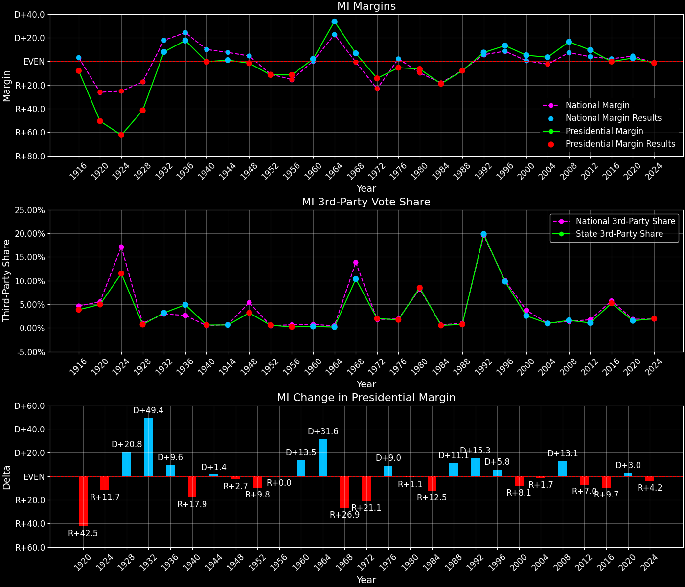
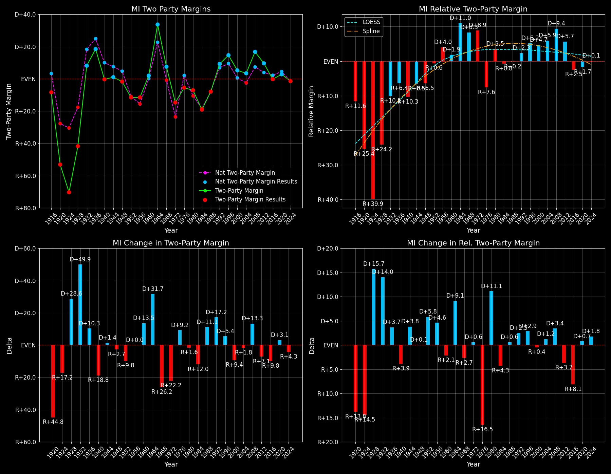

Michigan (MI) — Statewide

Margins · 3P share · Pres. deltas

Relative margins · Relative 3P · Rel. deltas
Michigan (MI) — Total Data
| Year | EVs | D | R | Margin | Rel. Margin | Nat. Margin | Margin Δ | Rel. Margin Δ | Nat. Margin Δ | Total votes |
|---|---|---|---|---|---|---|---|---|---|---|
| 1968 | 21 | 1,593,082(48.3%) | 1,370,665(41.6%) | D+6.7 | D+7.3 | R+0.6 | 3,295,715 | |||
| 1972 | 21 | 1,436,541(42.7%) | 1,926,772(57.3%) | R+14.6 | D+9.0 | R+23.5 | R+21.3 | D+1.6 | R+23.0 | 3,363,313 |
| 1976 | 21 | 1,662,669(47.1%) | 1,866,485(52.9%) | R+5.8 | R+8.0 | D+2.2 | D+8.8 | R+16.9 | D+25.7 | 3,529,154 |
| 1980 | 21 | 1,609,419(42.7%) | 1,887,686(50.1%) | R+7.4 | D+2.5 | R+9.9 | R+1.6 | D+10.5 | R+12.1 | 3,768,768 |
| 1984 | 20 | 1,529,738(40.5%) | 2,251,481(59.5%) | R+19.1 | R+1.0 | R+18.1 | R+11.7 | R+3.5 | R+8.2 | 3,781,219 |
| 1988 | 20 | 1,675,783(46.0%) | 1,965,486(54.0%) | R+8.0 | R+0.2 | R+7.7 | D+11.1 | D+0.8 | D+10.4 | 3,641,269 |
| 1992 | 18 | 1,871,182(44.0%) | 1,554,940(36.6%) | D+7.4 | D+1.9 | D+5.6 | D+15.4 | D+2.1 | D+13.3 | 4,250,935 |
| 1996 | 18 | 1,989,683(52.2%) | 1,481,572(38.9%) | D+13.3 | D+4.8 | D+8.6 | D+5.9 | D+2.9 | D+3.0 | 3,811,926 |
| 2000 | 18 | 2,170,862(51.3%) | 1,953,709(46.1%) | D+5.1 | D+4.6 | D+0.5 | R+8.2 | R+0.2 | R+8.0 | 4,233,434 |
| 2004 | 17 | 2,479,092(51.2%) | 2,313,707(47.8%) | D+3.4 | D+5.9 | R+2.5 | R+1.7 | D+1.3 | R+3.0 | 4,839,643 |
| 2008 | 17 | 2,872,579(57.4%) | 2,048,639(41.0%) | D+16.5 | D+9.2 | D+7.3 | D+13.1 | D+3.3 | D+9.7 | 5,002,188 |
| 2012 | 16 | 2,564,569(54.3%) | 2,115,256(44.8%) | D+9.5 | D+5.6 | D+3.9 | R+7.0 | R+3.6 | R+3.4 | 4,722,989 |
| 2016 | 16 | 2,265,444(47.0%) | 2,275,361(47.2%) | R+0.2 | R+2.3 | D+2.1 | R+9.7 | R+8.0 | R+1.8 | 4,816,067 |
| 2020 | 16 | 2,804,040(50.6%) | 2,649,852(47.8%) | D+2.8 | R+1.7 | D+4.4 | D+3.0 | D+0.6 | D+2.3 | 5,538,212 |
| 2024 | 15 | 2,736,533(48.3%) | 2,816,636(49.7%) | R+1.4 | D+0.1 | R+1.5 | R+4.2 | D+1.8 | R+6.0 | 5,664,186 |
Column explanations
- Year
- Election year.
- EVs
- Number of electoral votes allocated to this state or unit.
- D
- Number of votes for the Democratic candidate (raw count(pct%)).
- R
- Number of votes for the Republican candidate (raw count(pct%)).
- Margin
- Margin between the two major-party candidates, including third-party votes ((D - R)/total).
- Rel. Margin
- The presidential margin relative to the national presidential margin (Margin - Nat. Margin).
- Nat. Margin
- The national presidential margin for that year, including third-party votes ((D_total - R_total)/total_votes).
- Δ
- Change (delta) in the value from the previous election year. Blank if no data for previous year.
- Total votes
- Total voter turnout or ballots cast (when provided).
Michigan (MI) — Third-Party Data
| Year | Other votes | 3P Share | 3P Nat. Share | 3P Rel. Share |
|---|---|---|---|---|
| 1968 | 331,968(10.1%) | T+10.1 | T+13.6 | T-3.5 |
| 1972 | 0(0.0%) | T+0.1 | T-0.1 | |
| 1976 | 0(0.0%) | T+0.3 | T-0.3 | |
| 1980 | 271,663(7.2%) | T+7.2 | T+7.0 | T+0.2 |
| 1984 | 0(0.0%) | T+0.1 | T-0.1 | |
| 1988 | 0(0.0%) | T+0.2 | T-0.2 | |
| 1992 | 824,813(19.4%) | T+19.4 | T+19.2 | T+0.2 |
| 1996 | 340,671(8.9%) | T+8.9 | T+9.7 | T-0.7 |
| 2000 | 108,863(2.6%) | T+2.6 | T+3.7 | T-1.1 |
| 2004 | 46,844(1.0%) | T+1.0 | T+0.8 | T+0.1 |
| 2008 | 80,970(1.6%) | T+1.6 | T+1.4 | T+0.2 |
| 2012 | 43,164(0.9%) | T+0.9 | T+1.6 | T-0.7 |
| 2016 | 275,262(5.7%) | T+5.7 | T+5.5 | T+0.2 |
| 2020 | 84,320(1.5%) | T+1.5 | T+1.8 | T-0.3 |
| 2024 | 111,017(2.0%) | T+2.0 | T+1.9 | T+0.1 |
Column explanations
- Year
- Election year.
- Other votes
- Number of votes for third-party (other) candidates (raw count(pct%)).
- 3P Share
- Share of the vote received by third-party (other) candidates.
- 3P Nat. Share
- The national third-party share for that year (3P votes / total votes).
- 3P Rel. Share
- Third-party share relative to the national third-party share (3P share - Nat. 3P share).

Two-party margins · relative · deltas
Michigan (MI) — Two-Party Data
| Year | 2-Party Margin | 2-Party Nat. Margin | 2-Party Rel. Margin | 2-Party Margin Δ | 2-Party Nat. Margin Δ | 2-Party Rel. Margin Δ |
|---|---|---|---|---|---|---|
| 1968 | D+7.5 | R+0.7 | D+8.2 | |||
| 1972 | R+14.6 | R+23.6 | D+9.0 | R+22.1 | R+22.9 | D+0.8 |
| 1976 | R+5.8 | D+2.2 | R+8.0 | D+8.8 | D+25.8 | R+17.0 |
| 1980 | R+8.0 | R+10.6 | D+2.7 | R+2.2 | R+12.8 | D+10.7 |
| 1984 | R+19.1 | R+18.1 | R+1.0 | R+11.1 | R+7.5 | R+3.6 |
| 1988 | R+8.0 | R+7.8 | R+0.2 | D+11.1 | D+10.4 | D+0.8 |
| 1992 | D+9.2 | D+6.9 | D+2.3 | D+17.2 | D+14.7 | D+2.5 |
| 1996 | D+14.6 | D+9.5 | D+5.2 | D+5.4 | D+2.6 | D+2.9 |
| 2000 | D+5.3 | D+0.5 | D+4.7 | R+9.4 | R+8.9 | R+0.4 |
| 2004 | D+3.5 | R+2.5 | D+5.9 | R+1.8 | R+3.0 | D+1.2 |
| 2008 | D+16.7 | D+7.4 | D+9.4 | D+13.3 | D+9.8 | D+3.4 |
| 2012 | D+9.6 | D+3.9 | D+5.7 | R+7.1 | R+3.4 | R+3.7 |
| 2016 | R+0.2 | D+2.2 | R+2.4 | R+9.8 | R+1.7 | R+8.1 |
| 2020 | D+2.8 | D+4.5 | R+1.7 | D+3.0 | D+2.3 | D+0.7 |
| 2024 | R+1.4 | R+1.6 | D+0.1 | R+4.3 | R+6.1 | D+1.8 |
Column explanations
- Year
- Election year.
- 2-Party Margin
- Margin between the two major-party candidates, ignoring third-party votes ((D - R)/(D + R)).
- 2-Party Nat. Margin
- The national presidential margin for that year, including third-party votes ((D_total - R_total)/total_votes).
- 2-Party Rel. Margin
- The presidential margin relative to the national presidential margin (Margin - Nat. Margin).
- Δ
- Change (delta) in the value from the previous election year. Blank if no data for previous year.